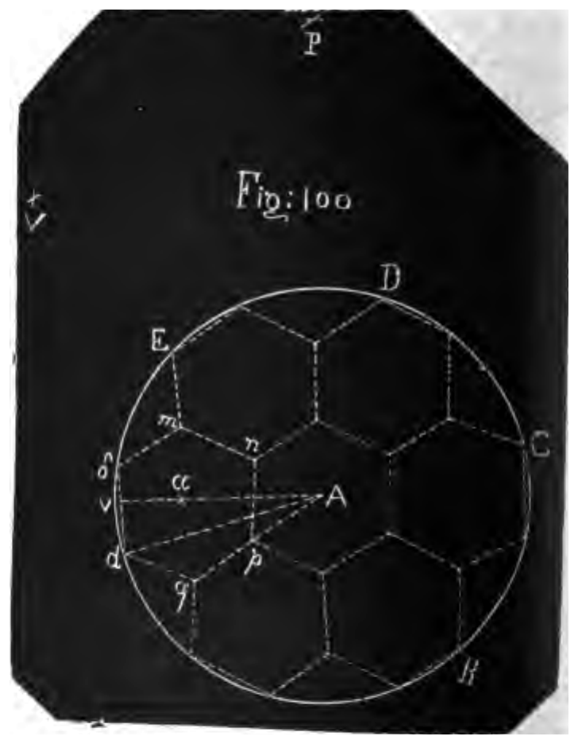

§§ 186–192: Cinque quadrati e sette esagoni regolari inscritti nel cerchio (Fig. 96, 100)¶
186. Prob. In un cerchio (fig. 96) di raggio dato \(AB\) inscrivere cinque quadrati eguali, de’ quali uno sia concentrico al cerchio, e gli altri lo tocchino, avendo ciascuno un lato comune col quadrato di mezzo.
Sol. Si facciano al raggio \(AB\) eguali le corde \(BC, CD, DE\). Si faccia a \(BD = Ba = Ea\). Ad \(Aa\) si facciano eguali le corde \(BF, Bf\). Col raggio \(AB\), e col centro \(a\) si tagli il cerchio in \(G\), e si faccia ad \(Aa\) eguale la corda \(Gg\).

Col
f. 0139 · p. 114raggio \(ga\), e col centro \(g\) si descriva un arco \(aP\), e si faccia sotto esso la corda \(aP = aA\). Collo stesso centro \(g\), e col raggio \(gA\) si descriva un arco \(Ap\) sulla direzione dell’arco \(aP\). Si faccia ad \(aA = Pp\). Si facciano ora ad \(Ap\) eguali le corde \(Bq, fn, Em, Fl\). Collo stesso raggio \(Ap\), e coi centri \(B, q, f, n, E, m, F, l\) si descrivano degli archi, che si taglino dentro il cerchio in \(L, Q, N, M\). Sarà \(LMNQ\) il quadrato centrale, \(BLQq, fQNn, ENMm, FMLl\) gli altri quadrati cercati.
Dim. Se si confrontino i punti \(a, A, G, B, q\) di questa figura coi punti \(Q, p, A, R, S\) della figura 4, si avrà dal § 21 l’equazione per questa figura 96, \((ag)^2 = (aB)^2 + Gg \cdot Aa\). Cioè posto il raggio \(AB = 1\), \((ag)^2 = 3 + 2 = 5\) (§ 27); quindi \(ag = \sqrt{5}\). È poi \(aP = aA = \sqrt{2}\). Ora si ha \(ga : aP :: gA : Ap\) (§ 93), cioè \(\sqrt{5} : \sqrt{2} :: 1 : Ap\). Quindi \(Ap = \sqrt{\frac{2}{5}} = Em\). Essendo poi \(BCDE\) una semicirconferenza (§ 64), sarà \(BmE\) un angolo retto (31, lib. III), quindi \((BE)^2 = (Bm)^2 + (mE)^2\); cioè \(4 = (Bm)^2 + \frac{2}{5}\). Quindi \((Bm)^2 = 9 \cdot \frac{2}{5}\), e \(Bm = 3\sqrt{\frac{2}{5}} = 3mE\). Dello stesso valore si troverà essere \(qE\), e si dimostrerà esser retti tutti gli altri angoli del quadrilatero \(BmEq\), che sono in semicerchj. Dunque esso è un parallelogrammo rettangolo. Istessamente si dimostra essere un parallelogrammo rettangolo \(Flfn\). Se si faccia la corda \(Em = k\), sarà \(mF\) corda del complemento al quadrante \(= h\) (§ 159), e si avrà \(h^2 = 2 - 2k\sqrt{1 - \frac{1}{4}k^2}\). Quindi essendo \(k^2 = \frac{2}{5}\), si avrà \(h^2 = 2 - 2k\sqrt{\frac{9}{10}} = 2 - 2\sqrt{\frac{9}{25}} = 2 - \frac{6}{5} = \frac{4}{5} = 2k^2\), cioè \((Fm)^2 = (FM)^2 + (Mm)^2\). Quindi l’angolo \(FMm\) sarà retto (48, lib. I); così gli altri \(BLl, fQq, ENn\). Se poi si chiami \(x\) la distanza del punto \(m\) dal punto dove cade la perpendicolare da \(F\) sopra la \(Bm\), si avrà (13, lib. II) \((BF)^2 = (Fm)^2 + (Bm)^2 + 2Bm \cdot x\), cioè \(2 = \frac{4}{5} + \frac{18}{5} - 6x\sqrt{\frac{2}{5}}\). Quindi \(x\sqrt{\frac{2}{5}} = \frac{2}{5}\), e dividendo per \(\sqrt{\frac{2}{5}}\), si ha \(x = \sqrt{\frac{2}{5}} = mM\). In seguito se si chiami \(y\) la perpendicolare, che da \(F\) cade sulla \(Bm\), si avrà \(y^2 = (Fm)^2 - x^2 = \frac{4}{5} - \frac{2}{5} = \frac{2}{5}\); quindi \(y = \sqrt{\frac{2}{5}} = FM\). Quindi si dimostra essere il punto \(M\) sulla \(Bm\). Egualmente si dimostra esservi il punto \(L\). Essendo dunque \(Bm = 3Em = Mm + BL + Em\); sarà anche \(LM = Em\). Si dimostrano poi dello stesso valore gli altri lati \(MN, NQ, LQ\). Dalle cose dette fin qui resta pur dimostrato essere retti gli angoli ai punti \(L, M, N, Q\) esterni al quadrilatero \(LMNQ\),
f. 0140 · p. 115dunque lo saranno anche gli interni, e si avranno i cinque quadrati, che si volevano.
187. Prob. Dati (fig. 97) i cinque punti \(A, B, C, D, E\) estremi di un pentagono regolare; trovare i cinque punti \(a, b, c, d, e\), nei quali si taglierebbero le diagonali di esso pentagono.
Sol. Col lato del pentagono \(AB\) preso per raggio, e coi centri \(A, B, C, D, E\) si segnino degli archi, che si taglino in \(a, b, c, d, e\). Sarà fatto.
Dim. Se si suppongano condotte le diagonali, e segnati i lati del pentagono \(ABCDE\), si avrà l’angolo \(BAC = BDA\) (29, lib. III) \(= CAD\). Quindi \(Ab = bD\) (6, lib. I). Si avrà poi \(BbA = bDA + bAD\) (32, lib. I) \(= BAb + bAD = BAD = ABD\) (5, lib. I). Quindi il triangolo \(ABb\) sarà isoscele (6, lib. I), cioè sarà \(AB = Ab = bD\). Dunque ecc.
Questa figura è il pentalfa, ossia l’igia di Pitagora.
188. Prob. In un cerchio (fig. 98) di raggio dato \(AB\) inscrivere sei pentagoni regolari.
Sol. Si faccia nella circonferenza ad \(AB = BC = CD = DE = Ed\). Quindi a \(BD = Ba = Ea\). Quindi ad \(Aa = BF = Db = db\). Si
f. 0141 · p. 116faccia nella circonferenza a \(bF = BP = PQ = QR = RS\). Collo stesso raggio \(bF\), e coi centri \(B, P, Q, R, S\) si segnino degli archi, che si taglino in \(\beta, p, q, r, s\). Ora col raggio \(\beta p\), e coi centri \(\beta, P\) si segnino due archi, che si taglino \(c\). Collo stesso raggio, e coi centri \(P, p\) si segnino due archi, che si taglino in \(d\). Si avranno due dei pentagoni cercati, cioè \(\beta pqrs\), pentagono al centro \(A\), e \(\beta pdPc\), che tocca il cerchio dato in \(P\). Nella stessa guisa si troveranno i vertici, che mancano agli altri quattro pentagoni \(pqfQe, qrhRg, rskSi, s\beta mBl\).
Dim. Saranno i punti \(B, P, Q, R, S\) estremi di un pentagono regolare inscritto al cerchio dato (§§ 40, 128). Quindi saranno i punti \(\beta, p\) nella diagonale \(BQ\); i punti \(p, q\) nella diagonale \(PR\) (§ 187), ed essendo \(Bp = \beta Q\), sarà \(B\beta = pQ\). Istessamente si proverà \(Pp = qR\), e per essere \(BQ = PR\) (27, lib. III), sarà anche \(B\beta = Pp\) e \(\beta p = pq\). Istessamente si proverà, che sono uguali tra loro tutti i lati del pentagono \(\beta pqrs\). Si ha poi l’angolo \(\beta pq\), cioè \(BpR = BPR + PBp\) (32, lib. I); ma \(PBp\) cioè \(PBQ = QPR\). Dunque \(\beta pq = BPQ\). Istessamente si dimostra, che gli altri angoli del pentagono \(\beta pqrs\) sono eguali agli angoli del pentagono \(BPQRS\). Dunque sono entrambi regolari. Si avrà inoltre l’angolo \(QBR\), formato da due diagonali del pentagono \(BPQRS\), che è l’angolo \(\beta Bs\), eguale all’angolo \(\beta qs\) formato da due diagonali del pentagono \(\beta pqrs\) (20, lib. VI). Quindi essendo isosceli entrambi i triangoli \(\beta Bs, \beta qs\), avranno eguali tra loro anche gli angoli alla base comune \(\beta s\) (5, 32, lib. I); quindi anche i triangoli saranno in tutto eguali (26, lib. I). Quindi i triangoli \(Bm\beta, \beta pq\), avendo tutti i lati eguali tra loro, avranno eguali anche gli angoli (8, lib. I), come pure i triangoli \(Bls, srq\). Quindi tutti i lati e gli angoli del pentagono \(Bm\beta sl\) saranno eguali ai lati e agli angoli del pentagono \(\beta pqrs\), e però entrambi saranno regolari. Lo stesso si dimostra degli altri pentagoni \(\beta cPdp, peQfq, qgRhr, riSks\). Dunque ecc.
189. Il punto \(b\) sarà centro del pentagono \(\beta mBls\), e la distanza \(bB\) raggio del cerchio circoscritto ad esso pentagono, e agli altri eguali, come dimostreremo subito; il che aggiunge una nuova bella proprietà al punto \(b\) già rimarcato tante volte in questa Geometria. Poichè oltre alle divisioni in estrema e media ragione, che per esso nascono nel diametro \(BAE\) (§§ 45,
f. 0142 · p. 11746), e la determinazione fatta per esso della \(bF\) lato del pentagono inscritto al cerchio di raggio \(AB\) (§ 40), e della \(bA\) lato del decagono inscritto allo stesso cerchio (§ 41); si ha ancora \(Bb\) raggio del cerchio circoscritto ai sei pentagoni, che si possono inscrivere al maggior cerchio di raggio \(AB\), come nel presente Problema. Difatti posto il raggio \(AB = 1\), si ha \(Ab = \frac{1}{2}(\sqrt{5} - 1)\) (§ 181); essendo poi \((BE)^2 = (BQ)^2 + (QE)^2\) (31, lib. III) \(= (BQ)^2 + (Ab)^2\); ne verrà \(BQ = \sqrt{\frac{5 + \sqrt{5}}{2}}\). Si ha poi \(\beta Q = BP = bF = \sqrt{\frac{5 - \sqrt{5}}{2}}\) (§ 182). Quindi \(BQ : \beta Q :: BQ \cdot \beta Q : (\beta Q)^2 :: \sqrt{5} : \frac{5 - \sqrt{5}}{2} :: 1 : \frac{1}{2}(\sqrt{5} - 1) :: BA : bA\). Quindi \(BQ : BQ - \beta Q :: BA : BA - bA\), cioè \(BQ : B\beta :: BA : Bb\). Saranno dunque le due diagonali dei pentagoni \(BPQRS, Bm\beta sl\) tra loro come \(BA : bA\). Essendo dunque \(BA\) raggio del primo pentagono; sarà \(Bb\) raggio del secondo (20, lib. VI).
190. Prob. Dati (fig. 99) i vertici di un esagono regolare \(BCDEdc\); trovare i punti \(l, m, n, g, p, q\), nei quali si tagliano le sue diagonali, che non passano pel centro.
Sol. Si faccia a \(BD = Ba = Ea\); quindi a \(BC = BA = CA = B\alpha\); ad \(aA = a\alpha\); ad \(\alpha B = \alpha P = AP\). Ora col raggio \(aP\), e coi centri \(B, C\) si segnino due archi, che si taglino in \(l\); coi centri \(C, D\) altri due, che si taglino in \(m\), e così via via. Saranno questi i punti cercati.
Dim. Si supponga, che le diagonali indicate si taglino in \(l, m, n, g, p, q\). Essendo l’angolo \(BDc = DcE\) (29, lib. III), sarà \(BD\) parallela a \(cE\) (29, lib. I). Sarà dunque il triangolo \(Clm\) simile al triangolo \(CcE\) (2, 5, lib. VI), e però equilatero.
f. 0143 · p. 118Istessamente lo sarà il triangolo \(Blq\) simile al triangolo \(BDd\). Essendo poi il triangolo \(CcE\) eguale al triangolo \(BdD\), per avere i lati eguali a quelli di esso (§ 2) (8, 4, lib. I), ed essendo il lato \(BD\), e quindi \(lm\), egualmente distante dal lato \(cE\) che il lato \(Cc\), e quindi \(ql\), dal lato \(dD\) (14, lib. III), se si sovrapponga il triangolo \(BdD\) al triangolo \(CcE\), la retta \(ql\) cascherà sulla retta \(lm\) e le sarà eguale. Ma è \(Bl = lq\). Dunque \(Bl = lm\). Istessamente si dimostra, che è \(Dm = ml\). Dunque è \(Bl = \frac{1}{3}BD = \frac{1}{3}\sqrt{3}\) (ponendo il raggio del cerchio \(BC = AB = 1\)) (§ 2). Istessamente \(Cl = \frac{1}{3}\sqrt{3}\). Ma si sono appunto prese \(Bl = Cl = aP = \frac{1}{3}\sqrt{3}\) (§ 185). Dunque \(l\) è uno dei punti cercati. Lo stesso si dimostra degli altri punti \(m, n, g, p, q\). Dunque ecc.
191. Prob. Nel cerchio (fig. 100) di raggio dato \(AB\) inscrivere sette esagoni regolare, uno dei quali sia concentrico al cerchio, e gli altri siano disposti intorno ad esso.
Sol. Si faccia nella circonferenza del cerchio dato ad \(AB = BC = CD = DE = Ed\). Quindi a \(DB = DV = dV\). Col raggio \(CV\), e coi centri \(C\) ed \(A\) si segnino due archi, che si taglino in \(P\). Collo stesso raggio \(PC\), centro \(P\) si tagli la circonferenza del cerchio dato in \(\delta\). Sarà \(d\delta\) il lato degli esagoni da inscriversi, i quali si inscriveranno facilmente uno presso l’altro. Poichè collo stesso lato \(d\delta\) preso per raggio, e coi centri \(d, \delta\) si segnino due archi, che si taglino in \(\alpha\). Collo stesso raggio, e col centro \(\alpha\) si descriva un cerchio, dentro il quale si inscriva un esagono regolare (15, lib. IV) \(d\delta mnpq\). Collo stesso raggio, e col centro \(A\) si descriva un cerchio, che


passerà per \(np\). In esso si descriva l’esagono, che ha per uno dei lati \(pn\). Sopra i lati di questo esagono si descrivano gli altri esagoni, come si è fatto da prima sul lato \(d\delta\), e sarà fatto quanto volevasi.
Dim. Posto per brevità \(AB = 1\); sarà \(CP = CV = \sqrt{7}\) (§ 100) \(= AP\). Sarà poi \(AP : A\delta :: A\delta : \delta d\) (§ 86); cioè \(\sqrt{7} : 1 :: 1 : \delta d\); quindi \(\delta d = \sqrt{\frac{1}{7}}\).
Si suppongano per un momento inscritti gli esagoni cercati, e sia l’incognita \(d\delta\) lato di essi \(= x\); si divida essa per metà in \(v\), e si guidi la \(Av\), che le sarà perpendicolare (§ 83), e passerà per \(\alpha\) centro dell’esagono, di cui è lato \(d\delta\), tagliando pure per metà in \(\mu\) il lato \(pn\) dell’esagono centrale. Essendo nel triangolo equilatero \(Apn\), \(pn : A\mu :: 1 : \frac{1}{2}\sqrt{3}\) (§ 104); si avrà \(x : A\mu :: 1 : \frac{1}{2}\sqrt{3}\), quindi \(A\mu = \frac{1}{2}x\sqrt{3}\), e quindi \(Av = 3A\mu = \frac{3}{2}x\sqrt{3}\); è poi \(dv = \frac{1}{2}x\). Essendo poi \(1 = (Ad)^2 = (Av)^2 + (dv)^2\); sarà \(1 = \frac{27}{4}x^2 + \frac{1}{4}x^2 = 7x^2\); quindi \(x^2 = \frac{1}{7}\), ed \(x = \sqrt{\frac{1}{7}}\), della quale grandezza si è appunto determinata la \(d\delta\) nella Soluzione del Problema, come si è dimostrato qui sopra. Dunque ecc.
Questo Problema si trova in Pappo, lib. VIII, Prob. 15, Prop. 19, sciolto colla riga e col compasso non più semplicemente di così. Egli vi ha pure aggiunta una costruzione meccanica.
192. Noi crediamo di avere omai adempito quanto abbiamo promesso ai §§ 6 e 7. E quanto al primo punto abbiamo già dati tutti gli elementi della Geometria del Compasso; cioè tutti que’ Problemi, che bastano a potere col solo compasso senza la riga trovare tutti que’ punti, che si possono trovare col compasso e colla riga insieme. Per dimostrar questo (§ 71) si osservi: primo, che per via della Geometria Elementare i punti d’un Problema si trovano o colla sezione degli archi fra loro, e questa è tutta cosa propria della Geometria del compasso, o colle sezioni degli archi e delle rette, o delle rette fra loro, e tutto questo articolo vien ad essere compreso dal Libro Settimo § 110 e seguenti. Una retta poi qualunque, che sia necessaria alla Soluzione d’un Problema, viene determinata dalla grandezza e dalla posizione. Per rapporto alla grandezza abbiamo insegnato ad ingrandire, diminuire, dividere qualunque grandezza finita in qualunque numero di parti nel Libro Terzo § 64
f. 0145 · p. 120e seguenti, e nel Libro Quarto §§ 72, 73 e 74; a trovare poi le terze, le quarte, le medie proporzionali, così parimente a dividere una retta in qualunque ragione data, nel lib. V § 86 e seguenti. Riguardo alla posizione delle rette, essa si determina per via della posizione di due punti per ciascuna; ora servirà il Libro Quarto § 76 e seguenti a ritrovare i punti per ogni caso delle perpendicolari e delle parallele. Per collocar le rette tra loro ad ogni altro angolo dato per via di due punti, somministrerà quanto è necessario il Lib. VIII § 113 e seguenti. La divisione della circonferenza del cerchio e d’ogni arco in ogni maniera possibile alla Geometria Elementare è esaurita nel Libro II § 27 e seguenti. Dopo tutto ciò non veggo quale altro elemento si possa desiderare. Quanto poi riguarda la scelta dei Problemi, che abbiamo qui raccolti, lascieremo che i Matematici giudichino, se in un gran numero di casi utili o dilettevoli non sia pregio dell’opera, non solo per la precisione del risultato, ma ancora per la speditezza della costruzione, abbandonare la riga, e servirsi del solo compasso fino a quel termine, che trovati tutti i punti necessarj al Problema, si abbia, se ciò bisogna, a condurre da un punto all’altro una o più rette, le quali certo col solo compasso segnar non si possono, ed abbisognano della riga.